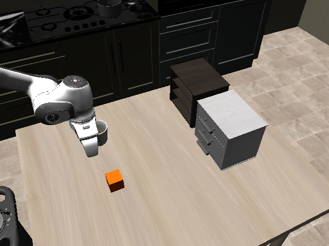
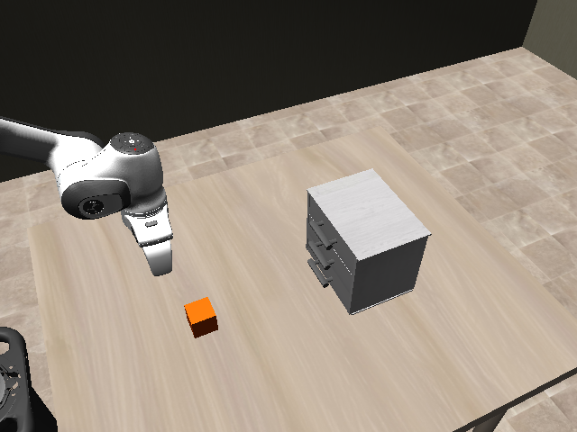
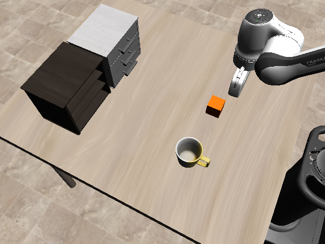
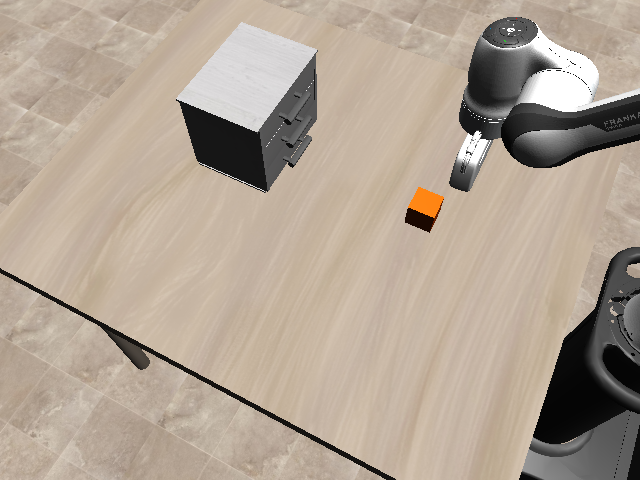
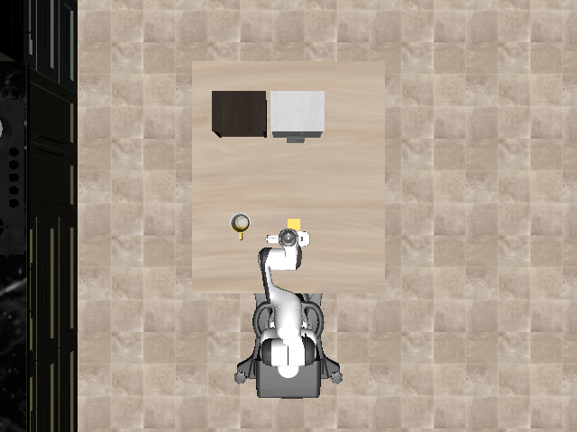
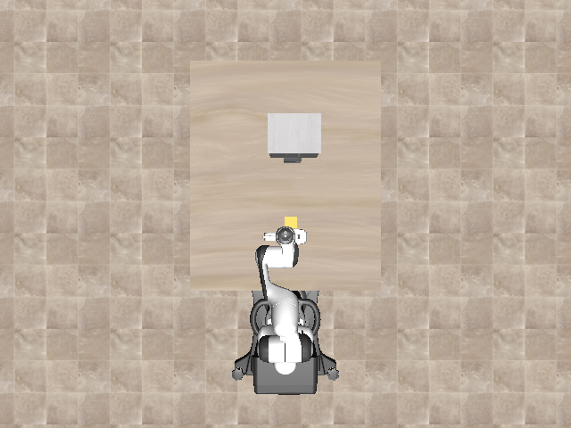

以 original 为基准，删除 shelf、mug 和厨房橱柜背景。俯视桌面、机械臂基座在下方时，drawer 整体沿世界 −Y 平移 11.0507 cm。
纵深 22.1014 cm，取现有原生 box 组件的前后外尺寸，包含把手。新根位置（世界坐标，米）：[0.0379608, 0.17078085280834168, 0.905]。
三个视图均为同一 1.000 s 初始状态的真实仿真渲染。点击图片打开原图并放大。布局与验证记录





